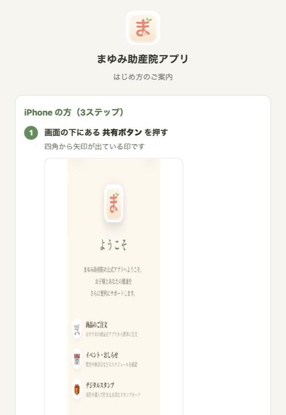

まゆみ助産院アプリ はじめてのご利用
QRコードを読み取ってから、ログインするまでの流れ
1 / 3
お手持ちのスマートフォンのホーム画面に追加して、アイコンからお使いいただきます。
先にホーム画面へ追加してから、ご登録ください。
順番が逆になると、同じお名前で会員が2つできてしまいます。
1
QRコードを読み取る
カメラアプリを向けるだけで開きます。受付でお渡しした紙のQRコードをお使いください。

このQRコードです
2
はじめ方の画面が出ます
お使いの機種を見分けて、その機種の手順だけが出ます。この画面ではまだ登録しません。

LINEから開いた方へ
LINEの中のブラウザでは、ホーム画面に追加できません。 画面のすみの「…」から 「Safariで開く」「Chromeで開く」 を選んでから、次へお進みください。 この画面がそのことを教えてくれます。まゆみ助産院1 / 3